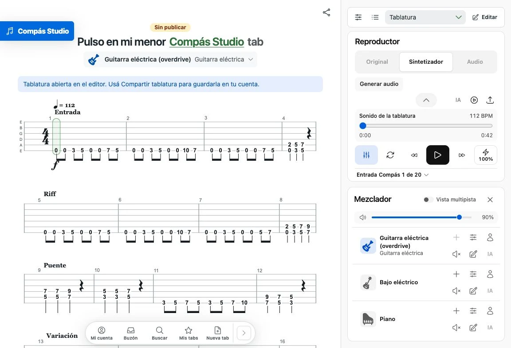

Compás Studio Desktop
Abrí y editá tus tablaturas, seguí la música compás a compás y aislá el instrumento que querés practicar.
Ver instaladores
Instaladores
Instalación
En Mac, abrí el DMG y mové Compás Studio a Aplicaciones. En Windows, ejecutá el instalador. Para separar audio, configurá FFmpeg, FFprobe y Demucs.